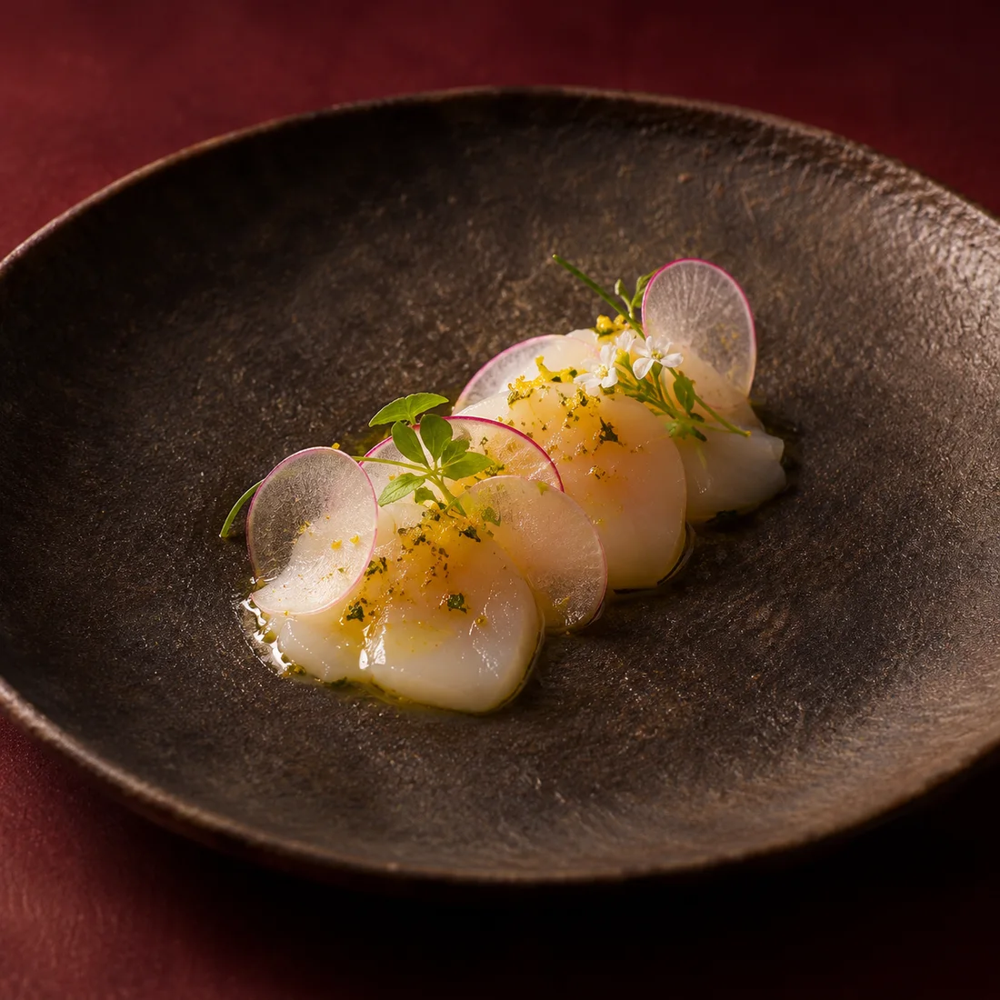
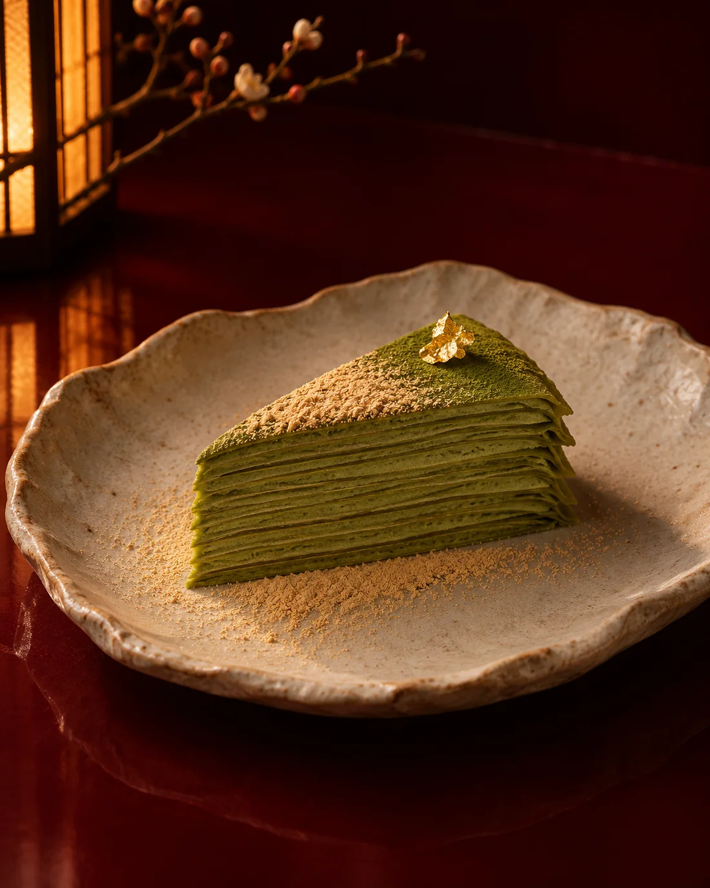
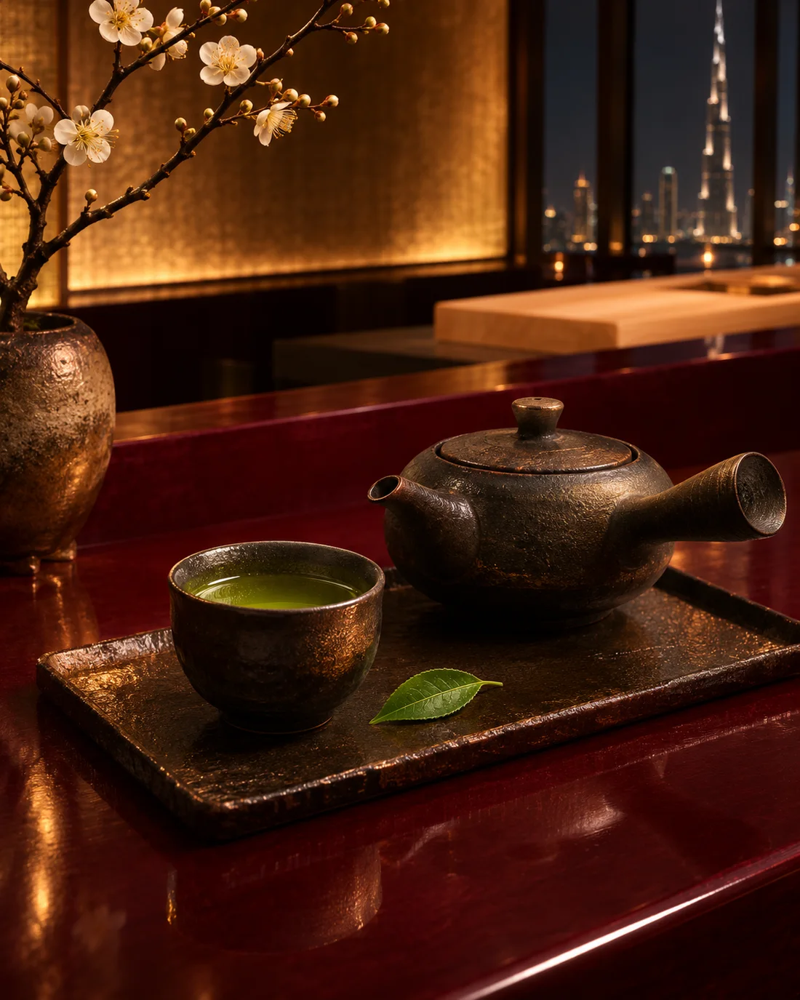

Hokkaido Scallop
AED 88Chilled scallop, yuzu kosho, translucent radish, and young herbs.

Explore a selection of dishes imagined for JIN. Each one begins with the ingredient and ends at the counter.
ExploreThe menu
From a delicate opening plate to a final cup of tea, the menu follows the balance of season, temperature, and texture.
These dishes and AED prices illustrate the direction of JIN. The final menu and pricing will be confirmed before opening.
Bright, composed beginnings that introduce the season with clarity.

Chilled scallop, yuzu kosho, translucent radish, and young herbs.

A seasonal silver skin fish, sharpened with radish and bright acidity.

Yellowtail, smoked ponzu, shaved daikon, and a clean finish of shiso oil.
Warm dishes and nigiri served at the point where texture and temperature align.

Golden eye snapper, lightly seared, with a touch of citrus and nikiri.

Rich bluefin tuna, warm seasoned rice, and a final brush of nikiri.

Silken egg custard, sea urchin, and the delicate aroma of dashi.

Five pieces selected at the counter and seasoned individually for balance.
Restrained finales with gentle sweetness, toasted notes, and clean texture.

Black sesame ice cream, crisp rice wafer, and seasonal berries.

Fine matcha crêpes, light mascarpone, roasted kinako, and gold leaf.
Japanese tea, coffee, mineral water, and wine chosen to extend the rhythm of the meal.

A precise single-origin coffee with cocoa depth and a clean, floral finish.

Shade-grown green tea with deep umami, soft sweetness, and a long finish.

Soft still water selected for its quiet minerality and palate-cleansing texture.

A fragrant Japanese white wine with citrus lift and a precise mineral finish.
One piece, one moment, perfectly timed.
The chef adjusts each course in response to the ingredient and the guest.
For the full expression of JIN, allow the evening to move through a composed omakase progression. The chef selects the sequence and serves each course when it is ready.
Pairing suggestions will draw from sake, tea, and non-alcoholic choices, with the final offering confirmed before opening.
Discover omakase →